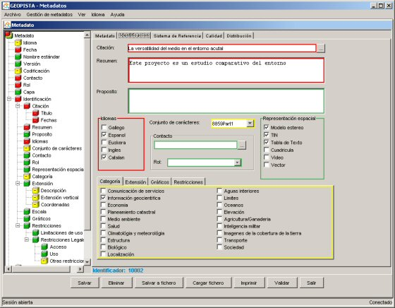

Identificación
En la pestaña de identificación
se muestran los datos correspondientes a la entidad MD_identification del estándar que
es la información básica necesaria para identificar de modo único un recurso o recursos. Estos datos son:
- Citación:
Hace referencia al nombre dado al recurso.
Cuando se pulsa el botón adjunto se muestra la pantalla citación donde se
pueden introducir todos los datos de la citación.
- Resumen:
Breve resumen descriptivo del contenido del recurso.
- Propósito:
Resumen del propósito para el que se creó el recurso.
- Idiomas:
Idiomas usados en el conjunto de datos.
- Conjunto de caracteres:
Nombre completo de la norma de codificación de caracteres. Esta predefinido a 8859Part1.
- Contacto:
Identificación de la persona y/u organización relacionadas con el recurso.
Cuando se pulsa el botón adjunto se muestra la pantalla de contactos donde se puede seleccionar o
crear nuevos contactos
- Rol:
Posición o cargo que ocupa la persona responsable del recurso.
- Representación espacial:
Métodos usados para la representación espacial de la información geográfica.

Pestaña metadato en la pantalla de edición
Como se puede ver esta pestaña incluye cuatro subpestañas más, que son las siguientes.
Categoría
Tema(s) principal(es) del conjunto de datos.

Pestaña categoría en la pestaña identificación
Extensión
Esta pestaña corresponde a la entidad EX_Extent del estándar. Representa
información sobre el área cubierta por los datos y la localización geográfica de los mismos. Da las coordenadas de las cuatro esquinas, junto con una
breve descripción del área cubierta por el conjunto de datos.
- Descripción:
Breve descripción del área geográfica dentro de la que los datos están disponibles.
- Escala:
Factor que da una idea general sobre la densidad de los datos espaciales.
- Coordenadas:
Posición geográfica del conjunto de los datos, es decir, las coordenadas geográficas de las cuatro esquinas.
- Extensión vertical:
Dominio vertical del conjunto de datos.
- Valor mínimo:
Extensión vertical inferior contenida en el conjunto de datos.
- Valor máximo:
Extensión vertical superior contenida en el conjunto de datos.
- Unidades de medida:
Unidades verticales usadas para la descripción da la extensión vertical.
Ejemplo: metros, pies, mm, hoctopascales.

Pestaña extensión en la pestaña identificación
Gráficos
Proporciona gráficos que ilustran el recurso. Estos
gráficos (imagen rasterizada del conjunto de datos) deben incluir una leyenda explicativa para su interpretación.

Pestaña gráficos en la pestaña identificación
Restricciones
Esta pestaña corresponde a la entidad MD_Constraints del estándar. Representa
información a cerca de las restricciones que afectan al recurso.
- Limitaciones de uso:
Limitaciones que afectan a la capacidad para el uso del recurso.
- Restricciones legales:
Restricciones y prerrequisitos legales para acceder y usar el recurso.
- Restricciones de acceso:
Restricciones dedicadas a asegurar la protección de la privacidad o propiedad
intelectual y cualquier restricción para obtener el recurso.
- Restricciones de uso:
Limitaciones de uso aplicadas al conjunto de datos para asegurar la privacidad o
protección intelectual, y cualquier restricción o advertencia especial para su uso.
- Otras restricciones:
Permite al usuario describir las restricciones no nombradas en las otras opciones.

Pestaña restricciones en la pestaña identificación